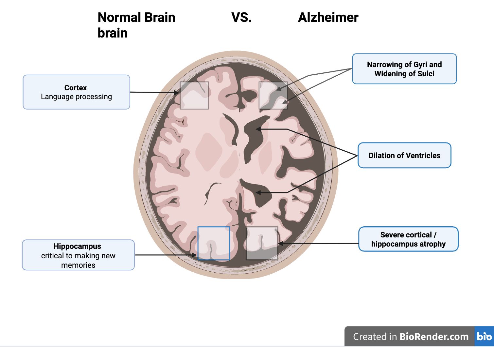
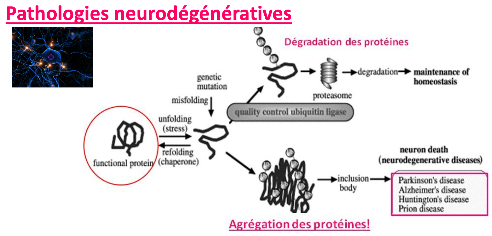
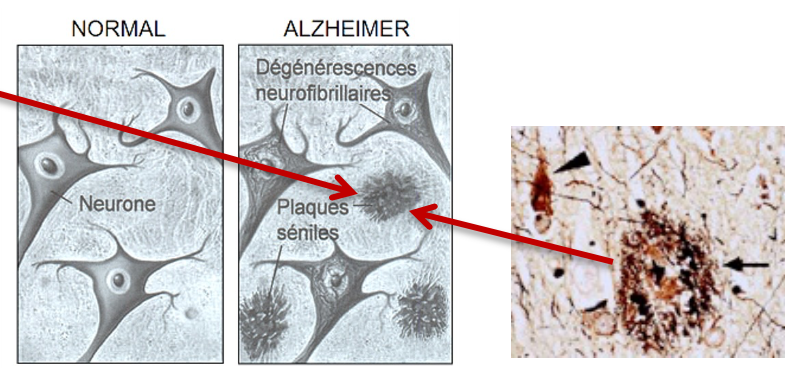

01
La pathologie
Comprendre Alzheimer, ses mécanismes, ses facteurs de risque et son impact en santé publique.
Accéder à la pageDécouvrez la pathologie d'Alzheimer : une base de données (créée par nos soins) en santé et des résultats dans une perspective de prévention en santé publique. L'étude de corrélations possibles entre différentes variables et la maladie d'Alzheimer. Et également des recommandations en fonctions de vos préferences.

Relier connaissances biomédicales, base de données relationnelle et visualisation dans un site web.
PRÉSENTATION
En Santé Publique, la maladie d’Alzheimer est devenue un enjeu mondial. Elle est notamment due au mauvais fonctionnement du protéasome (organite permettant la dégradation des protéines mal repliées). Cette maladie neuro-dégénérative touche hommes comme femmes, toutes ethnies confondues. Elle se caractérise par la présence au niveau du système nerveux central, de plaques séniles extracellulaires. Là où l’environnement joue aussi un rôle, les facteurs de risque sont : l’exposition à l’aluminium et aux solvants organiques, les micro-traumatismes crâniens à répétition et la moindre stimulation intellectuelle.
Ce projet met en lien une thématique biomédicale, une base de données relationnelle et une interface web permettant de vous présenter des informations cliniques et des analyses exploratoires.
Les données utilisées sont fictives et ont été organisées pour illustrer un travail de sélection, d’intégration et d’exploitation dans une logique de santé publique.
PATHOLOGIE
Le protéasome (ou ubiquitine-protéasome) est un complexe enzymatique multi-catalytique, nécessaire à la viabilité des cellules. Il est présent dans toutes les cellules eucaryotes (dans le noyau, cytoplasme, associées à la membrane du réticulum endoplasmique ou au cytosquelette) (Coux et al., 1996). Son rôle principal se définit par la dégradation des protéines (Rock et al., 1994).
L’Alzheimer est une maladie neurodégénérative liée au vieillissement. Les hommes autant que les femmes et toutes ethnies confondues sont susceptibles de la développer. Elle a été décrite pour la première fois par le psychiatre allemand Aloïs Alzheimer (1864 - 1915) en 1906 à propos d’une patiente présentant un syndrome démentiel et des caractéristiques histopathologiques particuliers.
Elle se caractérise notamment par la présence de plaques séniles, d’amas neurofibrillaires, d’une atteinte du système cholinergique et d’une perte neuronale et synaptique.


ESPACE PUBLICITÉ ⚠️
La fondation Médéric-Alzheimer soutient les recherches pour l'inclusion de la pathologie. Elle vise à apporter un soutien pour des dispositifs d'accompagnements destinés à améliorer l'accueil, la prise en soins, le parcours des personnes vivant avec la maladie d'Alzheimer.
Découvrir l’appel à projets